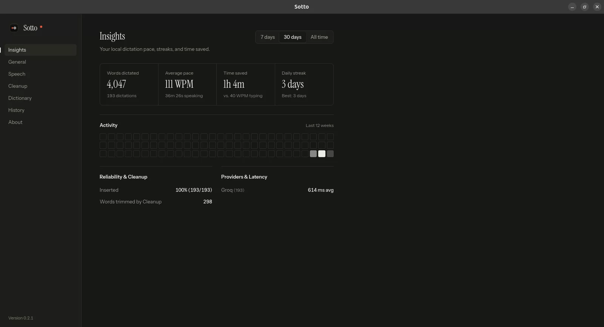

Hold a key. Speak. Clean text lands at your Linux cursor.
Sotto transcribes your voice with Groq Whisper in about 600–800 ms, strips out stutters and self-corrections, and pastes straight into your terminal, editor, or browser on Wayland and X11 for $0 on Groq’s free tier.
Read what happens in the demo
The user keeps focus inside their active Linux window, holds the configured dictation shortcut so the Sotto pill enters its live recording state, speaks a full thought with natural pauses, and releases the key. Within roughly 800 ms, Sotto transcribes the audio, cleans up filler words, and injects the finished text at the cursor.
Linux dictation usually breaks on Wayland or locks you into a slow local model.
You end up back on the keyboard for long prompts, Slack messages, and code comments. Sotto stays out of your way until you hold your shortcut key, sends audio only to your own Groq or ElevenLabs key, and puts finished text where you are typing.
193 dictations, 100% inserted, $0 spent.
Three days of everyday writing on Groq’s free tier: 4,047 words spoken in 36m 26s at 111 WPM, saving over an hour compared to 40 WPM typing.
- Inserted
- 100% (193 / 193)
- Groq avg latency
- 614 ms
- Average pace
- 111 WPM
- API bill
- $0 (Groq free tier)

Four-step setup, then one shortcut.
-
Hold your key in any app
Stay in your terminal, editor, or browser. Double-tap the shortcut when you want hands-free lock mode.
-
Talk naturally
Groq Whisper
large-v3-turbotranscribes in about 800 ms, and cleanup strips filler words and mid-sentence restarts while keeping your phrasing. -
Release to paste
Sotto injects the finished text via
wl-clipboardandCtrl+V(withydotoolas an optional fallback) and restores your previous clipboard.
Built like a quiet instrument.
- Your API key stays on disk
-
Stored in
~/.config/sotto/config.jsonwith0600permissions. Audio goes only to Groq or ElevenLabs, and Groq’s free tier covers everyday dictation. - Failures are never silent
- If a microphone is missing, a key fails, or the network drops, the pill tells you immediately and Settings keeps the full cause. Every recording stays on disk so you can retry with one click.
- Custom words land right
- Add project names, acronyms, and preferred spellings to your Dictionary so you do not have to fix them after.
Install in one command on Ubuntu or Debian.
Downloads the latest .deb from GitHub Releases, verifies its SHA-256
checksum against the published .sha256 file, and installs
sotto with dpkg.
Built by a 17-year-old who got tired of Linux voice typing breaking on Wayland. Sotto is free, MIT licensed, and runs for $0 on Groq’s free tier. If it saves you time, a star on GitHub helps more Linux users find it.
Star Sotto on GitHubQuestions
Does Sotto work on Wayland?
Yes. Text injection leads with wl-clipboard (wl-copy) plus
Ctrl+V while restoring your previous clipboard on a best-effort basis,
and includes ydotool as an optional fallback.
How much does it cost to run?
Sotto is free and MIT licensed. You bring your own API key for Groq Whisper
large-v3-turbo (which includes a generous free tier) or ElevenLabs
Scribe.
What happens on first launch?
A four-step setup walks you through picking Groq or ElevenLabs, verifying your API key with a live test request, choosing your hold-to-dictate shortcut, and dictating one sentence into any app.
What if I am not on Ubuntu or Debian?
Grab the .AppImage directly from
GitHub Releases, or build from source with Cargo and Node.